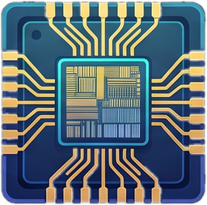
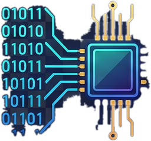
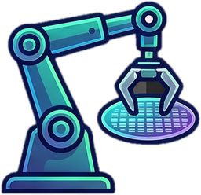
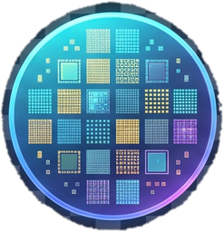

Lesson first, then the news · from Nov 12-20, 2026 · semiconductors for a future IC designer
Part 1 · Lesson: learn the words first
What you will be able to do. After about 4 minutes you can explain 7 terms that appear in the news below, in your own words. Everything in Part 1 is background teaching (my own explanation), not newsletter facts; it follows the wiki glossary and concept pages.
1Package and OSAT
In one sentence
A package is the protective case and wiring that connect a tiny silicon chip (a die) to a circuit board. An OSAT is a company that assembles and tests chips for others.
Picture it
The die is a tiny engine; the package is the engine block with all the pipes and plugs.
Why a designer cares
A design only works if it can be packaged: heat, power and signals all have to get in and out.
Wiki page: wiki/concepts/chiplets-and-hybrid-bonding.md
3Pitch and hybrid bonding
In one sentence
Pitch is the distance between neighbouring connections; smaller pitch means more connections in the same area. Flip-chip joins dies with tiny solder balls, while hybrid bonding presses copper pads directly together, so the pitch can be much smaller.
Picture it
Solder balls are a few big plugs; hybrid bonding is a dense field of tiny pins.
Why a designer cares
Denser links give more bandwidth for less energy between stacked dies, so designers must plan them early.
Wiki page: wiki/concepts/chiplets-and-hybrid-bonding.md
4HBM and the base die
In one sentence
HBM is a tower of stacked memory dies placed right next to the processor. The base die at the bottom of the tower manages the connection to the processor.
Picture it
A tall car park next to a shop: many cars (data) can move at once.
Why a designer cares
AI chips depend on HBM bandwidth, and a customised base die makes memory part of the chip design.
EDA is the software used to design chips. RTL is code that describes what the hardware does; verification checks it works before manufacturing; 'shift left' means finding bugs earlier.
Picture it
RTL is the blueprint written as code; verification is the building inspector who checks the blueprint before anything is built.
Why a designer cares
A bug found after manufacturing is far more expensive, which is why AI agents are being tried on verification and exploration first.
A foundry manufactures chips that other companies design. A node name such as 18A or 2 nm marks a manufacturing generation; the number is a marketing label, not a literal size.
Picture it
The foundry is a print shop and the node is its printing technology; you bring the artwork, your design.
Why a designer cares
Your design must follow the foundry's rules for its node, and capacity at advanced nodes is limited.
Wiki page: wiki/concepts/foundry-capacity-and-nodes.md
Check yourself (5 questions)
1. What does hybrid bonding do differently from flip-chip?
A) Uses bigger solder balls
B) Joins copper pads directly
C) Removes the package
Show answer
B) Joins copper pads directly. Hybrid bonding presses copper pads together without solder, so connections can be much closer.
2. Why are chiplets used?
A) Smaller dies are easier to make well
B) They remove the need for packaging
C) They replace memory
Show answer
A) Smaller dies are easier to make well. Small dies are cheaper to make well, and different technologies can be combined.
3. What is the memory wall?
A) Memory is too expensive
B) Moving data limits performance
C) Chips run too hot
Show answer
B) Moving data limits performance. Processors compute faster than memory delivers data.
4. What is verification?
A) Manufacturing the chip
B) Checking the design works before manufacturing
C) Selling the chip
Show answer
B) Checking the design works before manufacturing. Finding a bug before manufacturing is far cheaper than after.
5. A '2 nm' node name is...
A) The exact transistor length
B) A manufacturing generation label
C) A package size
Show answer
B) A manufacturing generation label. Node names are marketing labels for a generation, not literal measurements.
Part 2 · This week's news
In 20 seconds
Chips are being stacked, not just shrunk: Samsung is aiming for hybrid bonding in 2027.
AI agents are entering chip design, but humans still sign off.
Packaging and memory, not just transistors, now limit AI chips, so money is flowing there.

IC designChiplets · hybrid bonding
Samsung bets on gluing chips together with copper
What happened
Samsung targets early 2027 to develop 3D Cube-H hybrid bonding, with a 6 µm interconnect pitch, for AI processors and HBM. [SPN-1112-01, 2026-11-12]Read full: TrendForce ↗
A paper calls hybrid and fusion wafer bonding foundational for both 'More than Moore' integration and 'More Moore' transistor scaling. [SPN-1116-03, 2026-11-16]Read full: SPN paper page ↗
Fine-pitch probing (EOTPR) can isolate die-to-die interconnect defects in chiplet devices. [SPN-1120-03, 2026-11-20]Read full: SPN paper page ↗
New to this? Old way: a chip hangs on tiny solder balls (flip-chip). Hybrid bonding presses copper pads directly onto each other, so the connections can be much closer together. Closer connections mean more wires between stacked chips, which means more bandwidth for less energy.
AI take · hypothesis, not a fact. If connections get this dense, designers will probably have to plan die-to-die links and test access from the first day of a design, not at the end.
IC designEDA · AI agents
AI agents are joining the chip-design team, on a leash
What happened
Agentic AI automates engineering workflows and widens design exploration while engineers keep oversight and verification. [SPN-1113-10, 2026-11-13]Read full: Semiconductor Engineering ↗
Orchestration, security, data privacy and reliability must improve before agents get more autonomy. [SPN-1117-01, 2026-11-17]Read full: Semiconductor Engineering ↗
Synopsys, Hiveware, Silvaco and Axiomise name integration, expertise retention, data protection and cost as challenges. [SPN-1119-10, 2026-11-19]Read full: Semiconductor Engineering ↗
Siemens will acquire Lauterbach to combine chip verification with software debugging in its EDA portfolio. [SPN-1112-11, 2026-11-12]Read full: Electronics World ↗
New to this? EDA is the software engineers use to design chips: write the logic (RTL), simulate it, check it (verification), then lay it out. 'Shift left' means catching bugs earlier in that chain, because a bug found after manufacturing costs far more.
AI take · hypothesis, not a fact. Routine checking and exploration will likely be automated first, so a beginner's edge may shift toward writing clear specs and judging whether the AI's results are right. Learn RTL and verification basics anyway.

IC designMemory wall · HBM
The real AI bottleneck is moving data, not computing
What happened
Edge AI inference drives memory designs that cut data movement, such as processing-in-memory and near-memory computing. [SPN-1113-02, 2026-11-13]Read full: Semiconductor Engineering ↗
Larger models and longer context windows strain memory capacity, bandwidth, latency, power and cost. [SPN-1113-09, 2026-11-13]Read full: Semiconductor Engineering ↗
Samsung is reportedly developing custom HBM4E for Meta, with customer-specific functions in a 2 nm base die. [SPN-1118-05, 2026-11-18]Read full: TrendForce ↗
With memory scarce, better test, repair and reliability raise the number of usable dies. [SPN-1117-07, 2026-11-17]Read full: 3D InCites ↗
New to this? HBM is a tower of memory chips sitting right beside the processor. The chip at the bottom of the tower (base die) handles the connection; putting a customer's own logic there means memory is becoming part of the chip design itself.
AI take · hypothesis, not a fact. Architects may increasingly be judged on how little data their design moves, not only on raw speed.

Process & packagingPackaging capacity · foundry
Packaging is now where AI chips get built, and the money followed
What happened
Intel signed its first external 18A-P foundry customer and named Microsoft as first customer for EMIB packaging. [SPN-1120-01, 2026-11-20]Read full: CNBC ↗
ASE is investing NT$100 billion in two Kaohsiung plants for advanced AI chip packaging, aiming at 5,000 jobs. [SPN-1116-02, 2026-11-16]Read full: Taipei Times ↗
SPIL partnered with Nvidia to triple Taiwan's advanced packaging capacity by mid-2029. [SPN-1119-01, 2026-11-19]Read full: Taipei Times ↗
Nvidia is also investing over US$1 billion in Kinsus to expand substrate manufacturing. [SPN-1119-01, 2026-11-19]Read full: Taipei Times ↗
New to this? Packaging means assembling finished chips into a working module. ASE and SPIL do this for others (they are OSATs).
AI take · hypothesis, not a fact. With this much Taiwan capacity planned, packaging skills may become a regional career advantage for chip engineers.

Process & packagingCapacity · wafers
Chips stay scarce into 2027, maybe 2028
What happened
SMIC sees tight capacity through 2027, with equipment lead times of 16-24 months. [SPN-1117-02, 2026-11-17]Read full: TrendForce ↗
SEMI expects silicon wafer shipments to grow 11.8% in 2026, driven by AI, memory and fab expansion. [SPN-1120-06, 2026-11-20]Read full: Semiconductor Engineering ↗
New to this? A new fab needs equipment ordered up to two years ahead, so shortages cannot be fixed quickly.